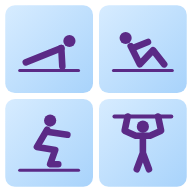

Ochrana soukromí
Aplikace Cvičení slouží k zapisování a sledování cvičení v sešitu Excelu (.xlsx).
- Vše zůstává u vás. Aplikace běží jen ve vašem prohlížeči. Nemá vlastní server, nepoužívá cookies, analytiku ani jiné sledování a vaše data nikam neodesílá.
- Váš sešit. Údaje o cvičení čte a ukládá výhradně do souboru .xlsx, který sami otevřete.
- Paměť prohlížeče. Neuložené záznamy a naposledy otevřený sešit si aplikace pamatuje jen v úložišti vašeho prohlížeče na daném zařízení, aby se nic neztratilo. Smažete je vymazáním dat webu v nastavení prohlížeče.
- Webová adresa. Aplikaci hostuje služba GitHub Pages. Ta jako u každé webové stránky vidí jen běžné technické údaje o načtení stránky (např. IP adresu) – nikoli obsah vašeho sešitu.
- OneDrive (volitelné). Při připojení se přihlašujete přímo u Microsoftu – aplikace vaše heslo nikdy nevidí. Získá jen oprávnění číst a zapisovat soubory ve vašem OneDrive a používá ho výhradně k otevření a uložení sešitu, který si sami vyberete. Přihlášení zůstává jen ve vašem prohlížeči; smažete ho v aplikaci přes ⚙ → Odpojit OneDrive. Přístup aplikace můžete kdykoli zrušit také na stránce account.live.com/consent/Manage.